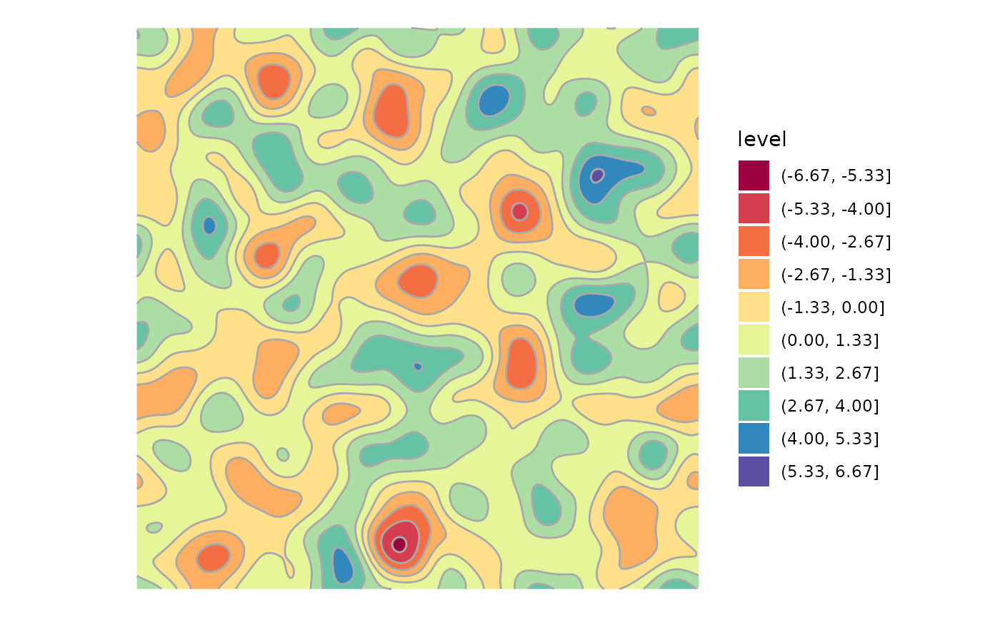

library(ggplot2)
#> Error in get(paste0(generic, ".", class), envir = get_method_env()) :
#> object 'type_sum.accel' not found
library(tidyfft)
sigma <- 25
scale_fac <- -pi ^ 2 * sigma ^ 2
set.seed(1234)
matrix(rnorm(512 * 512, sd = 100), 512) |>
tidy_fft() |>
to_polr() |>
add_l2sq() |>
dplyr::mutate(mod = mod * exp(scale_fac * l2sq)) |>
tidy_ifft() ->
gauss_acf
tidyr::expand_grid(x = 1:512, y = 1:512) |>
tibble::add_column(z = as.vector(gauss_acf)) |>
ggplot() +
aes(x = x, y = y, z = z) +
geom_contour_filled(bins = 10) +
geom_contour(bins = 10, color = "darkgrey") +
scale_fill_brewer(palette = "Spectral") +
coord_equal() +
theme_void()